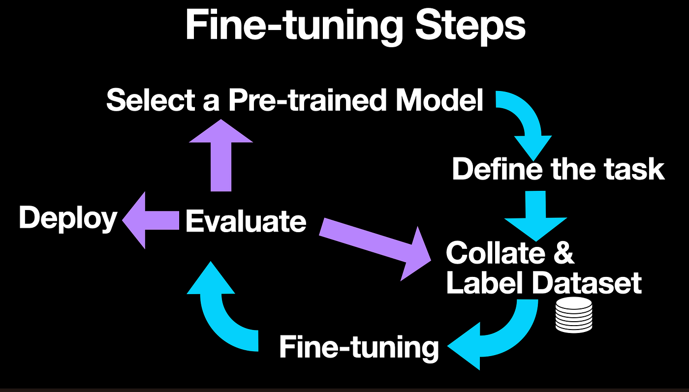

Key Steps in the Fine-Tuning Process (1/2)
-
1. Select a Pre-Trained Model
Choose a base model that aligns well with your target task or domain.
-
2. Gather and Preprocess Data
Collect high-quality, diverse, and representative data for your task.
Clean the data, format it consistently (e.g., JSON), and split it into training, validation, and test sets.
-
3. Configure Model & Tokenizer
Configure how the model is loaded, for instance, using 4-bit quantization (with QLoRA) to save memory.
Set up the tokenizer, adding special tokens and padding strategies.
